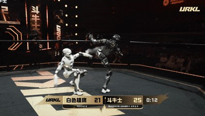
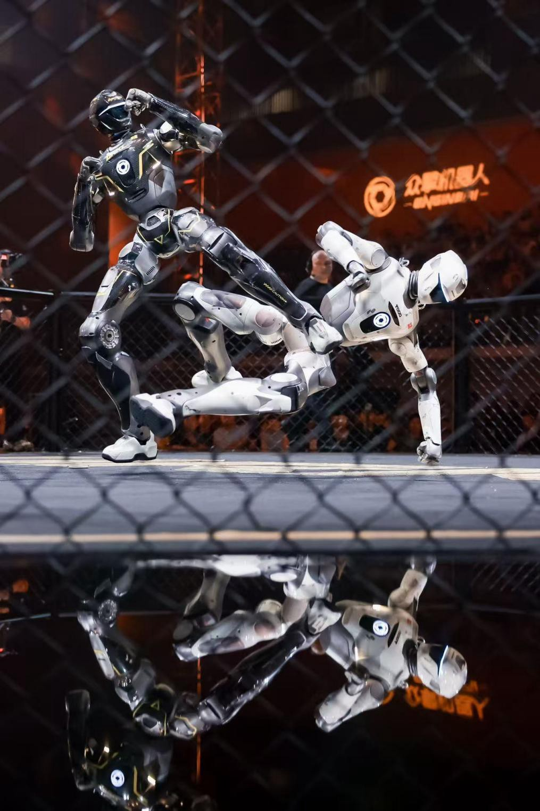
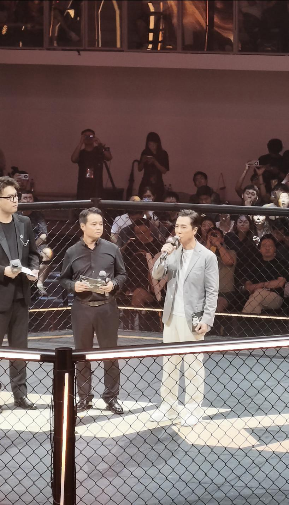
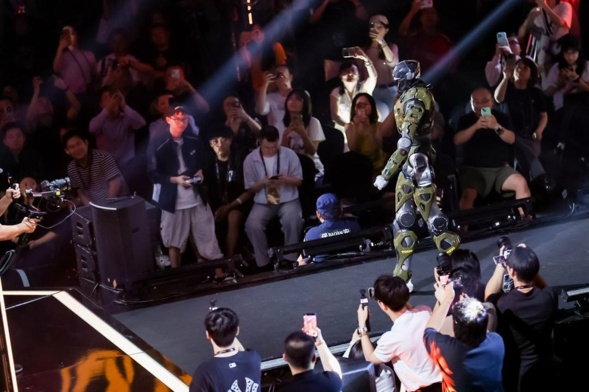

昨晚，深圳南山文体中心，两台1.73米、75公斤的铁疙瘩在铁笼里互殴了25分钟。

揭幕战：白色雄鹰 vs 斗牛士，25分钟激烈对抗
全网曝光量5到8亿。甄子丹坐在台下看。广东卫视直播冲上全国热度TOP1。
一场机器人格斗赛。总奖金1400万，冠军奖品是一条10公斤的24K纯金腰带。
大多数人看到的是热闹。我看到的是一个信号——
具身智能的竞争，已经从实验室的PPT，打到了擂台上。而擂台，才是真正的压力测试场。
一、格斗赛到底在考什么？

T800统一平台，全金属抗冲击外壳，分布式传感器不在头部——头掉了还能打
先说一个反直觉的事实：URKL的规则设计，不是在比谁更能打，而是在比谁更抗揍。
所有参赛队伍使用同一款硬件——众擎T800。不能改动力，不能加护甲，不能堆硬件。唯一能比的，是算法。
赛事有一条被工程师私下叫"魔鬼条款"的规则：机器人倒地后，10秒内必须自己站起来。超时，直接判负。
为什么这条规则是核心？
因为在真实的工业场景里，机器人一定会被碰撞、会失衡、会摔倒。电力巡检的机器人会被大风吹倒，物流仓库的机器人会被货物砸到，消防救援的机器人会在废墟里翻跟头。能不能在10秒内自己站起来，不是竞技问题，是工程问题。
换句话说：URKL不是在办格斗赛，是在做一场公开的、极限条件下的具身智能工程验证。
再看技术细节。T800的分布式控制系统，核心传感器不在头部——这就是为什么揭幕战里"雄鹰"的头都被打掉了，还能继续战斗。全身关节峰值扭矩450N·m，出拳速度1.2米/秒，平衡恢复时间从最初的1.5秒缩短到0.8秒。
32支参赛队伍在赛前通过线上仿真系统完成了超过10万次模拟对抗，平均每支队伍优化算法27次。
这些数字背后只有一个结论：擂台上的每一拳，都在喂工业级算法。
二、为什么要打？

甄子丹现身深圳南山文体中心，为URKL揭幕战站台
你可能觉得，格斗赛是个营销噱头。
不是。
众擎创始人赵同阳说了一句话很关键："以赛促研、以赛促产。"
翻译成人话：擂台上的对抗数据，直接喂给工业版和家用版机器人的算法迭代。
这个逻辑其实不新。F1赛车就是这个模式——赛道上跑出来的空气动力学数据、轮胎磨损数据、发动机工况数据，最终全部转化为民用跑车的产品力。F1是技术的极限试验场，赛车是技术的载体。
URKL做的是同样的事。格斗是具身智能的F1。
在实验室里，你测的是理想状态下的步态稳定性。在擂台上，你测的是被一脚踹飞之后的动态恢复能力。哪个数据更有价值？答案不言自明。
而且URKL的模式很聪明——它做了一个"安卓生态"。硬件统一，算法开放。所有队伍在同一个平台上比拼软件能力。这意味着：
- 硬件成本被摊薄，参赛门槛降低
- 算法多样性被最大化，32支队伍就是32种技术路线
- 所有优化成果可复用、可迁移到工业场景
众擎联合创始人姚淇元说："URKL赛场上锤炼出的每一套算法、每一次优化，都将成为全行业可复用、可迭代的公共资产。"
这不是客气话。众擎自己已经在做了——T800同时在巡检、商展等多个场景试跑，擂台数据反哺工业版本。据深圳机器人协会数据，赛事中积累的运动控制算法已经被应用于汽车制造焊接环节，焊接精度提升25%，工作效率提高30%。
一场格斗赛，既是IP，又是技术中台，又是产业入口。一鱼三吃。
三、每天12亿往里砸，钱到底流向了谁？

T800全尺寸人形机器人登场，全场观众举手机记录——这是具身智能的"春晚"
格斗赛是表象，资金流向才是底牌。
先看一个数字：仅2026年6月一个月，具身智能赛道就完成63笔融资，总金额超350亿元——平均每天12亿往里砸。
这不是概念炒作。单笔10亿以上融资已成常态，10亿以下都没人发新闻稿。
但钱不是均匀撒的。拆完资金流向，你会发现一张非常清晰的产业地图。
钱流向了谁——头部融资全景
- 宇树科技：104天走完科创板全流程，募资42亿，发行估值420亿。2025年出货5500台，全球市占率32.4%，扣非净利润暴增653%。核心部组件自研自产率超90%，毛利率60%。
- 智平方：6月完成近50亿融资，估值突破200亿。23家投资方，已建成年产2000台以上半自动化产线。
- 银河通用：3月完成25亿，国家AI产业投资基金、中石化、中信投资、中银资产、上汽金控全在场。
- 星动纪元：两个月融了25亿。诚通基金领投，红杉、IDG、高瓴全在，产业资本注资超20家。
- 千寻智能：半年融了四轮，累计近50亿，A+轮单轮15亿，投后估值突破200亿。华为哈勃也在股东名单里。
- 墨奇智能：天使轮超10亿，阿里腾讯联合领投，蓝驰、君联、高榕、源码十余家参投，估值破70亿。创始人团队是华为智驾系。
- 至简动力：半年不到连续5轮，累计20亿。元璟、红杉、腾讯、阿里入局。i7 Pro不到一年完成百台交付。
- 灵初智能：天使轮+Pre-A合计20亿。国开金融、国中资本等"国家队"打头阵。
- 它石智航：Pre-A轮4.55亿美元，创中国具身智能单轮融资纪录。
- 逐际动力：半年累计27亿，近70%资金来自海外机构（欧洲、中东、北美），估值150亿。
截至6月底，18家企业估值超百亿，7家超200亿。百亿独角兽25家，15家上半年新晋。港股排队IPO的机器人相关企业达51家。
谁在掏钱——五层资本矩阵
900亿不是同一个口袋出的钱。拆开来看，牌桌上坐着五类玩家，每类人的算盘完全不同。
第一层：地方政府——不再只给政策，直接掏真金白银。
19家新晋机器人独角兽里，至少16家有地方国资背书。而且投资逻辑是"地域绑定"——深圳投深圳公司，北京投北京公司，上海投上海公司。
国家级基金出手最挑剔：智平方（国家中小企业产业基金）、自变量（国家AI产业投资基金）、千寻智能（中国互联网投资基金）、灵初智能（国开科创）——拿到"国家队"钱的只有6家，标准不是"商业前景"，是"战略意义"。
第二层：互联网大厂——11家下注，覆盖15家独角兽。
自变量是唯一集齐四家大厂的公司：美团（A轮领投）、阿里（A+轮领投）、字节跳动、小米（B轮领投）。小米战投连续三轮跟进。
"腾讯+阿里同时投一家"成为新常态：至简动力、墨奇智能都出现了两巨头同框。在过去几乎不可能——但在具身智能领域，不确定性太大，连巨头也要合围。
美团是产业逻辑最清晰的大厂投资者：自变量（大脑）→它石智航（灵巧手）→天机智能（本体）→地瓜机器人（算力平台），四笔投资覆盖产业链上中下游，每一家都能跟美团的配送/仓储场景直接对接。
华为通过哈勃投资正式入场：投了千寻智能（人形机器人）和极佳视界（视觉/世界模型），把机器人纳入"芯片+操作系统+生态"的战略版图。
京东是被严重低估的玩家：实际投了4家——与美团并列第一，覆盖整机、大脑、灵巧手、产线全链条。
第三层：产业CVC——用资本锁定供应链。
产业资方的逻辑不是财务回报，是"供应链卡位"。
上汽系是最活跃的汽车CVC：覆盖自变量、逐际动力、帕西尼、临界点4家，对逐际动力3轮连续跟进。本质是在锁定未来汽车产线的机器人供应商。
宁德时代投千寻智能——千寻的人形机器人在宁德时代电池产线零故障运行近千块电池。投之前，产线已经替宁德验证过了。
比亚迪投帕西尼感知——触觉传感器在汽车制造中的应用。蔚来资本投逐际动力——新能源车企集体押注机器人进产线。
第四层：顶级VC——从"选项目"变成"建生态"。
高瓴投了9家，几乎全覆盖——整机、大脑、灵巧手、算力、算法、平台全链条。红杉投了7家。蓝驰投了5家。
它们不再只是出资人——高瓴实际上在被投企业之间做业务对接，把投的公司串成一条链。VC的核心竞争力从"选项目"变成了"建生态"。
第五层：海外主权基金——首次系统性入场。
淡马锡（新加坡）选地瓜机器人——认可算力环节是长期价值最高的环节。沙特阿美风投Prosperity7同时投了千寻智能和地瓜机器人多轮——石油美元正在系统性转化为科技美元。
逐际动力Pre-IPO轮近70%资金来自海外机构，阿联酋磊石资本连续多轮追投。
还有一个隐藏玩家——智元机器人
智元本身不在19家新晋独角兽名单里（它更早成为独角兽），但它通过"拆分+孵化+投资"构建了一个生态集群：临界点做灵巧手、擎天租做租赁平台、灵初做算法。智元在扮演一个"机器人产业Holdings"的角色。
钱流向了什么环节——从"赌整机"到"全链条下注"
900亿不是全砸在整机上。
2026年资本最明显的转向：资金从追逐整机明星，沿着产业链纵深布局。
上半年融资中，超过一半涌向了"大脑派"——做机器人认知、决策、规划算法的企业。千寻智能半年融了四轮近50亿，它石智航单轮4.55亿美元创纪录。逻辑很清楚：硬件本体的技术门槛在快速下降，宇树已经把双足人形机器人价格打到3万元级别。当"身体"不稀缺了，"大脑"就成了决定上限的变量。
核心零部件成了另一条资本暗线。6月单月，零部件领域就发生了10起融资，覆盖触觉感知、力觉传感器、灵巧手、定位芯片、关节模组。泉智博（关节模组）一年半完成7轮融资，新奇机器人（谐波关节模组）半年三轮——资本在往更底层走。
业务流向——谁卖给谁？
资金流和业务流是两张不同的网。
上游卖给谁？绿的谐波（减速器）的客户不止一家整机厂——宇树、智元、优必选都要用它的产品。微纳核芯（B3+B4轮超10亿）做的微型电机，下游客户覆盖灵巧手和传感器厂商。上游是卖铲人，不管谁挖到金子，它都赚钱。
整机卖给谁？宇树5500台、智元5168台，主要流向3C电子制造、汽车零部件、新能源产线。星动纪元已经在十余个物流中心实现常态化作业，部分场景效率达到人工的85%。至简动力百台交付，全球首个CNC智能化具身机器人产线亮相。
关键验证：税收数据不会撒谎。2026年前5个月，全国工业企业购进具身智能机器人总金额同比增长2.3倍。配套信息系统服务增长190%。这不是VC在自嗨——是下游制造企业在真实采购。
深圳是整条链的风暴眼。2025年深圳机器人产业产值2426亿元，人形机器人整机产量34.34万套，同比涨83%。南山机器人谷聚集了优必选、乐聚、越疆、众擎、帕西尼、智平方、自变量等8家头部整机厂商，200多家配套企业。核心零部件本地配套率超60%。
一家整机厂从提出需求到拿到零部件，最长不超过半小时车程。
这就是URKL能落地深圳的底层原因。不是因为它有1400万奖金，是因为它背后站着整个深圳的机器人产业链——以及背后每天12亿涌入的资本洪流。
四、中美对比：谁在跑？
这场擂台赛，放到全球视角下看更有意思。
先看美国。
特斯拉正在all in人形机器人。7月份，弗里蒙特工厂的Model S和Model X生产线被彻底拆除——46天改造成了Optimus专属产线。Gen3已经定型，马斯克亲自拍板。目标是年底周产2000到2500台，年化10万台。
但Optimus有个硬伤：贵。单台制造成本超6万美元，光灵巧手就占了20%的物料成本——一双造价1.2万美元，每6周要换一次。
Figure AI估值390亿美元，Helix 02用单一神经网络实现了全身统一控制，能连续完成61个动作、4分钟的复杂家务。1X Technologies计划年底向美国私人客户交付家用机器人NEO，售价至少2万美元。
美国的优势是什么？数据。特斯拉有600万辆车每天产生1600亿帧真实世界视频数据，AI5芯片算力2500 TOPS。这套数据飞轮一旦转起来，能力提升速度没有初创公司跟得上。
中国的优势是什么？量产+供应链。
2026年，中国厂商占全球人形机器人产量的约九成。宇树和智元各自出货超5000台，合计占全球七成以上。而美国Figure AI和特斯拉的出货还停留在数百台。
更关键的是，特斯拉自己的Optimus，60%的核心配件来自中国供应商。
《华尔街日报》实地调查了近十家美国人形机器人初创企业，发现从伺服电机、精密减速器、一体化关节模组到灵巧手核心传动部件，高度依赖中国供应链，占比普遍超六成。
不是不想用美国本土的——是做不到。定制一款高精度关节模组，美国本土厂商要6周交付，深圳供应商最快3天拿出样品。
美国掌握了机器人的大脑，但中国握住了机器人的身体。
这是两种完全不同的产业路线。美国走的是航天飞机路线——追求性能冗余，不惜代价。中国走的是消费家电路线——先跑量再迭代，先把成本打下来。
Counterpoint Research的数据很说明问题：特斯拉Optimus单台成本超6万美元，中国宇树G1售价1.4万美元（约9.9万元人民币）。
谁先跑通规模化？答案已经写在了出货量里。
五、赛道预判
最后，说几个判断。
第一，具身智能已经从"资本热"切换到"产业热"。融资数字只是表象，税收数据才是真相。购进金额增长2.3倍、配套服务增长1.9倍——这是真金白银的采购，不是估值泡沫。
第二，产业链的真正利润在上游。整机厂商还在卷价格战，核心零部件厂商已经满产满销。绿的谐波订单排到2027年，毛利率远超整机企业。这个行业最终不是谁跑得快谁赢，是谁护城河深谁赢。
第三，2027年是分水岭。如果中国厂商能在这一年实现10万台以上年产能、单位成本降到2万美元以下，工业应用市场将占据绝对优势。如果特斯拉解决了灵巧手的量产问题，凭AI和数据积累追赶速度可能超预期。
第四，格斗赛模式会被复制。URKL证明了"以赛促研"的商业可行性——赛事IP+技术中台+产业入口。我预判2026年下半年到2027年，会出现更多类似的极限场景验证赛事，涵盖物流、安防、工业等不同领域。
第五，当前最大的风险不是技术，是交付。200多家具身智能企业，100多家人形机器人企业，但真正能把机器人送进工厂、让客户掏钱复购的，两只手数得过来。超过70%的融资流向了B轮以后的企业，腰部以下融资周期显著拉长。
一句话总结：
擂台上的拳头是假的，拳头背后跑出来的数据是真的。具身智能的下半场，不是比谁的机器人更能打，而是比谁的数据更值钱、交付更稳定、成本更低。
这一局，中国暂时跑在前面。但美国手里的数据飞轮，随时可能加速。
来源
- 深圳特区报《全球首个人形机器人自由格斗联赛开打》2026.7.17
- 深圳新闻网《以赛促研、以赛促产》2026.7.17
- 羊城晚报《机器人也要学"挨打"？》2026.7.15
- 智享新知《IPO闪电过会、天使轮10亿破纪录》2026.7.16
- IT桔子/36氪《谁在制造独角兽？19家明星机器人背后的资本全景图》2026.7.8
- 中国经济网《具身智能融资半年破900亿元！投资逻辑已然生变》2026.7.10
- 机器人大讲堂《59起融资、27起过亿：6月机器人赛道的钱，都流向了哪里》2026.7.6
- 智能制造网《2026年7月机器人赛道上半场战报》2026.7.15
- 新浪《2026年"人形机器人"走向上市潮》2026.7.6
- 新浪《特斯拉拆除Model S/X生产线，All in人形机器人》2026.7.15
- 晚点LatePost 特斯拉Optimus供应链报道 2026.7.9
- 与非网《中国机器人，让美国人焦虑了》2026.7.15
- 搜狐《人形机器人路线之争：中美为何走向两个方向》2026.6.30
- 凤凰科技《逐际动力完成近2亿美元Pre-IPO轮融资》2026.7.15
- 富士康/制造先锋《富士康投了家机器人SPAC》2026.7.17